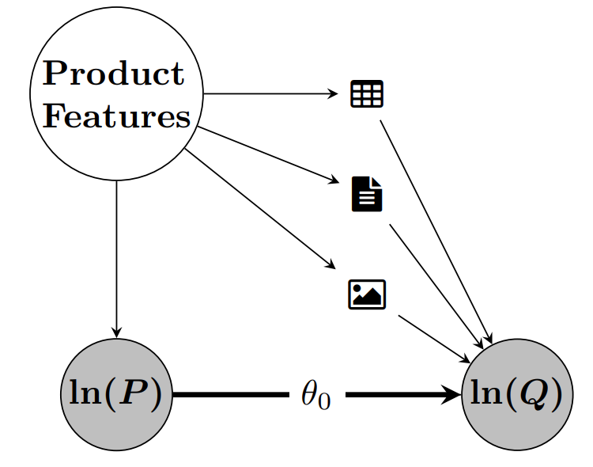

DoubleMLDeep: Estimation of Causal Effects with Multimodal Data
2024 ESIF Economics and AI+ML Meeting
August 13 - 14, 2024; Ithaca, United States
Sven Klaassen
University of Hamburg
Economic AI
Jan Teichert-Kluge
University of Hamburg
Philipp Bach
University of Hamburg
Economic AI
Victor Chernozhukov
Massachusetts Institute
of Technology
Martin Spindler
University of Hamburg
Economic AI
Suhas Vijaykumar
Massachusetts Institute
of Technology
Motivation
Motivation
- Causal Inference mainly relies on tabular data

- In a lot of applications additional unstructured data is available

- We consider multimodal data as confounders
- Applications in Marketing, Medicine / Health, Finance, ….
- Demand estimation
- Estimation of treatment effects conditioning on X-ray images
Motivation
- Use multimodal data (text and images) additionally to conventional tabular features

\(\Rightarrow\) Adjust for confounding encoded in unstructured data
Motivation
Opportunities
- Exploit state-of-the art architectures for causal estimation (for example LLMs)
- Example: Demand estimation, account for description, images, reviews
- Huge potential for future research
Challenges
- Recent innovations in deep learning for prediction
- Limitations of ML-based estimation due to regularization in causal estimation
- Need for effective Deep Learning architecture
- Challenges in identifying causal effects even in idealized simulations
Our approach
- Integrate state-of-the art Deep Learning tools for estimation of Causal Parameters
- DoubleML1: Use DML to account for ML regularization bias
- Combination: DoubleML + Deep Learning = DoubleMLDeep
Literature Review
Unstructured data like images and text are key for estimating causal parameters in various contexts, such as price elasticities and medical treatments (Chan et al. 2018; Masukawa et al. 2022), and climate effects (Wu, Duan, and Zhang 2023).
Text as an outcome/treatment has been conceptually explored by Egami et al. (2018) and Sridhar and Blei (2022).
Veitch, Sridhar, and Blei (2020) discuss consistency in this setting; we extend it by integrating text/images into double machine learning for valid inference.
Transformer models for treatment effects are applied by Melnychuk, Frauen, and Feuerriegel (2022), though without inference results.
There are also approaches to use images in causal inference (Jerzak, Johansson, and Daoud 2023a, 2023b, 2023c), but our approach enable valid inference with both, text and images, in a multimodal framework.
Motivating Example - PLR
Partially linear regression model (PLR)
\[ \begin{align} Y &= \theta_0 D + g_0(X) + \varepsilon, & \mathbb{E}[\varepsilon | X, D] = 0 \label{eq:plr1} \\ D &= m_0(X) + \vartheta, & \mathbb{E}[\vartheta | X] = 0 \label{eq:plr2} \end{align} \]
with
- \(Y\) - outcome variable
- \(D\) - policy/treatment variable
- \(X = (X_1, \dots X_p)^T\) - vector of additional controls
- \(\varepsilon\), \(\vartheta\) - stochastic errors

Double/Debiased Machine Learning (DML)
- Use machine learning methods to fit \[ \begin{align*} l_0(X)&:=\mathbb{E}[Y|X]\\ m_0(X)&:=\mathbb{E}[D|X] \end{align*} \]
- Construct the orthogonalized score (either cross-fitting or split the sample) for a fitted nuisance learner \(\hat{\eta}:=(\hat{l}, \hat{m})\) \[ \psi(W,\theta,\hat{\eta}) := \Big(Y - \hat{l}(X) - \theta\big(D-\hat{m}(X)\big)\Big)\Big(D-\hat{m}(X)\Big) \]
- Compute the estimate as the solution of \[ 0 = \frac{1}{n}\sum_{i=1}^n \psi(W,\hat{\theta},\hat{\eta}) \]
DoubleMLDeep
DoubleMLDeep - Module Structure

Nuisance Estimation
DoubleMLDeep - Module Structure

- It is possible to use binary treatment variables \(D \in \{0,1\}\) by adjusting the loss function: \[L = L_{log}(D, \hat{m}(X))\lVert Y - \hat{l}(X) \rVert_{P_n,2}\]
Application
Amazon Toys Dataset
- Public Data from the Amazon sales platform from category toys and games for subcategories vehicles, cars and trucks.
- Using the Sales Rank as a proxy for quantities, as shown in Bajari et al. (2023).
| Variable | Description |
|---|---|
| Sales Rank | Sales rank as weighted mean for the last 30 days |
| Price | Price as weighted mean for the last 30 days |
| Tabular | Tabular features as reviews, ratings, etc. |
| Text | Combination of Title, Category, Description, etc. |
| Image | Image of the product |
Model
- Run a simple log-log regression model
- Images and Text block backdoor path from price to demand (or sales rank)
\[ \ln(Q_{}) = \theta_0 \ln(P) + g_0(X) + \epsilon \]

Baseline OLS Model
- Baseline estimate with tabular covariates \(X_{\text{tab}}\)
- OLS: \[ \begin{align*} \ln(Q) =&\ \theta_0 \ln(P) + \beta^T X_{\text{tab}} + \epsilon \end{align*} \]
- \(R^2 = 0.330\)
| 2.5 % | \(\hat{\theta}\) | 97.5 % |
|---|---|---|
| -0.072 | -0.046 | -0.019 |

Baseline DML Model
- Estimate with tabular data as covariates \(X_{\text{tab}}\) in \(\texttt{DoubleMLPLR}\) model with \(\texttt{RandomForest}\) regressors
- \(l_0(X_{\text{tab}}) := \mathbb{E}[\ln(Q)|X_{\text{tab}}]\)
- \(R^2_{l_0} = 0.5986\)
- \(m_0(X_{\text{tab}}) := \mathbb{E}[\ln(P)|X_{\text{tab}}]\)
- \(R^2_{m_0} = 0.1884\)
- \(l_0(X_{\text{tab}}) := \mathbb{E}[\ln(Q)|X_{\text{tab}}]\)
| 2.5 % | \(\theta\) | 97.5 % |
|---|---|---|
| -0.132 | -0.1098 | -0.080 |

Deep Learning Models
- The \(\texttt{DoubleMLPLRDeep}\) was trained using sets of covariates augmented with text, image, or both modalities:
| Used Confounders |
|---|
| \(X = (X_{txt}, X_{tab})\) |
| \(X = (X_{img}, X_{tab})\) |
| \(X = (X_{txt}, X_{img}, X_{tab})\) |
- With each set of covariates \(X\), 5 runs are evaluated.
- The models were trained over 10 epochs with early stopping callback.
- The data was split into 80% training and 20% validation data.
\(\Rightarrow\) The aim is to emphasize the benefits of utilizing unstructured data.
(First) Results
| Model1 | Covariates | \(R^2_{l_0}\) | \(R^2_{m_0}\) | \(\hat{\theta}_0\) |
|---|---|---|---|---|
| \(\texttt{OLS}\) | \(X=X_{tab}\) | \(0.3300\) | - | \(-0.0455\) |
| \(\texttt{PLR}\) | \(X=X_{tab}\) | \(0.5986\) | \(0.1884\) | \(-0.1098\) |
| \(\texttt{PLRDeep}\) | \(X=(X_{txt}, X_{tab})\) | \(0.5574 \scriptstyle \pm0.025\) | \(0.6188 \scriptstyle \pm0.015\) | \(-0.2137 \scriptstyle \pm0.053\) |
| \(\texttt{PLRDeep}\) | \(X=(X_{img}, X_{tab})\) | \(0.4518 \scriptstyle \pm0.029\) | \(0.5085 \scriptstyle \pm0.028\) | \(-0.2721 \scriptstyle \pm0.038\) |
| \(\texttt{PLRDeep}\) | \(X=(X_{txt}, X_{img}, X_{tab})\) | \(0.5829 \scriptstyle \pm0.015\) | \(0.6532 \scriptstyle \pm0.018\) | \(-0.2794 \scriptstyle \pm0.044\) |
- Estimates \(\hat{\theta}\) become more negative with the inclusion of unstructured data
- The \(R^2\)-score of \(m_0\) improve with the inclusion of unstructured data
- Semi-synthetic data can illustrate the potential of unstructured data (see Appendix)
Future Directions
- Explore settings with multiple treatment variables.
- Investigate heterogeneous treatment effects.
- Apply the DoubleMLDeep framework in Difference-in-Differences (DiD) and Instrumental Variables (IV) settings.
- Conduct extensive simulation studies to test the robustness and accuracy of the DoubleMLDeep framework under various conditions.
\(\Rightarrow\) You can find more information in our paper: Klaassen et al. (2024)
Thank you for your attention!
References
References
Appendix: Double Machine Learning
Motivating Example - PLR
- Revisit the PLR model from the beginning:
\[ \begin{align} Y &= \theta_0 D + g_0(X) + \varepsilon, & \mathbb{E}[\varepsilon | X, D] = 0 \\ D &= m_0(X) + \vartheta, & \mathbb{E}[\vartheta | X] = 0 \end{align} \]
with
Motivating Example - Regularization Bias
- What if we simply plug-in ML predictions \(\hat{g}(X)\) for \(g_0(X)\) into \(Y = \theta_0D + g_0(X) + \varepsilon\)?

Motivating Example - Orthogonalization
Frisch-Waugh-Lovell style approach: \(\theta_0\) can be consistently estimated by partialling out \(X\), i.e,
- Predict \(Y\) and \(D\) by \(\mathbb{E}[Y|X]\) and \(\mathbb{E}[D|X]\), obtained using ML methods
- Residualize \(\tilde{Y} = Y - \mathbb{E}[Y|X]\) and \(\tilde{D} = D - \mathbb{E}[D|X]\)
- Regress \(\tilde{Y}\) on \(\tilde{D}\) to obtain \(\hat{\theta}\)

Double/Debiased Machine Learning (DML)
Neyman Orthogonality \[ \left.\partial_\eta \mathbb{E}[\psi(W; \theta_0, \eta)] \right|_{\eta=\eta_0} = 0 \] ensures that the moment condition identifying \(\theta_0\) is insensitive to small pertubations of the nuisance function \(\eta\) around \(\eta_0\)
Assumptions for the nuisance elements (see Chernozhukov et al. (2018)) \[ \lVert \hat{m} - m_0 \rVert_{P,2} \times \big( \lVert \hat{m} - m_0 \rVert_{P,2} + \lVert \hat{\ell} - \ell_0\rVert _{P,2}\big) \le \delta_N N^{-1/2} \]
Under some regularity conditions the estimator \(\hat{\theta}\) concentrates in \(1/\sqrt{N}\)-neighborhood of \(\theta_0\) and \[ \sqrt{N}(\hat{\theta} - \theta_0) \to \mathcal{N}(0,\sigma^2) \]
\(\Rightarrow\) simple approach to control for confounders, if they can be used for ML models!
Neyman Orthogonality
The naive approach minimizes the following MSE
\[\begin{align} min_{\theta} \mathbb{E}[(Y - D\theta_0 - g_0(X))^2] \end{align}\]
This implies the following moment equation
\[\begin{align} \mathbb{E}[\underbrace{(Y - D\theta_0 - g_0(X))D}_{=:\psi (W, \theta_0, \eta)}]&=0 \end{align}\]
Whereas for the partialling-out approach minimizes
\[\begin{align} min_{\theta} \mathbb{E}\big[\big(Y - \mathbb{E}[Y|X] - (D-\mathbb{E}[D|X])\theta\big)^2\big] \end{align}\]
which implies
\[\begin{align} \mathbb{E}\big[\underbrace{\big(Y - \mathbb{E}[Y|X] - (D-\mathbb{E}[D|X])\theta\big)(D-\mathbb{E}[D|X])}_{=:\psi (W, \theta_0, \eta)}\big]&=0 \end{align}\]
Neyman Orthogonality
Naive approach
\[\begin{align} \psi (W, \theta_0, \eta) = & (Y - D\theta_0 - g_0(X))D \end{align}\]
Regression adjustment score
\[\begin{align} \eta &= g(X), \\ \eta_0 &= g_0(X). \end{align}\]
FWL partialling out
\[\begin{align} \psi (W, \theta_0, \eta_0) = & \Big((Y- E[Y|X])\\ &-(D-E[D|X])\theta_0\Big)\\ & (D-E[D|X]) \end{align}\]
Neyman-orthogonal score (Frisch-Waugh-Lovell)
\[\begin{align} \eta &= (\ell(X), m(X)), \\ \eta_0 &= ( \ell_0(X), m_0(X)), \\ &= ( \mathbb{E} [Y \mid X], \mathbb{E}[D \mid X]). \end{align}\]
DML Key Ingredients
1. Neyman Orthogonality
Inference is based on a moment condition that satisfies the Neyman orthogonality condition \(\psi(W; \theta, \eta)\) \[E[\psi(W; \theta_0, \eta_0)] = 0,\]
where \(W:=(Y,D,X,Z)\) and with \(\theta_0\) being the unique solution that obeys the Neyman orthogonality condition \[\left.\partial_\eta \mathbb{E}[\psi(W; \theta_0, \eta)] \right|_{\eta=\eta_0} = 0.\]
\(\partial_{\eta}\) denotes the pathwise (Gateaux) derivative operator
DML Key Ingredients
1. Neyman Orthogonality
Neyman orthogonality ensures that the moment condition identifying \(\theta_0\) is insensitive to small pertubations of the nuisance function \(\eta\) around \(\eta_0\)
Using a Neyman-orthogonal score eliminates the first order biases arising from the replacement of \(\eta_0\) with a ML estimator \(\hat{\eta}_0\)
PLR example: Partialling-out score function \[\psi(\cdot)= (Y-E[Y|X]-\theta (D - E[D|X]))(D-E[D|X])\]
DML Key Ingredients
2. High-Quality Machine Learning Estimators
The nuisance parameters are estimated with high-quality (fast-enough converging) machine learning methods.
Different structural assumptions on \(\eta_0\) lead to the use of different machine-learning tools for estimating \(\eta_0\) Chernozhukov et al. (2018) (Section 3)
Rate requirements depend on the causal model and orthogonal score, e.g. (see Chernozhukov et al. (2018)),
- PLR, partialling out: \(\lVert \hat{m}_0 - m_0 \rVert_{P,2} \times \big( \lVert \hat{m}_0 - m_0 \rVert_{P,2} + \lVert \hat{\ell}_0 - \ell_0\rVert _{P,2}\big) \le \delta_N N^{-1/2}\)
- IRM/DR score, ATE: \(\lVert \hat{m}_0 - m_0 \rVert_{P,2} \times \lVert \hat{\ell}_0 - \ell_0\rVert _{P,2} \le \delta_N N^{-1/2}\)
DML Key Ingredients
3. Sample Splitting
To avoid the biases arising from overfitting, a form of sample splitting is used at the stage of producing the estimator of the main parameter \(\theta_0\).
Efficiency gains by using cross-fitting (swapping roles of samples for train / hold-out)
DML Key Ingredients
Main result in Chernozhukov et al. (2018)
There exist regularity conditions, such that the DML estimator \(\tilde{\theta}_0\) concentrates in a \(1/\sqrt{N}\)-neighborhood of \(\theta_0\) and the sampling error is approximately \[\sqrt{N}(\tilde{\theta}_0 - \theta_0) \sim N(0, \sigma^2),\] with \[\begin{align}\begin{aligned}\sigma^2 := J_0^{-2} \mathbb{E}(\psi^2(W; \theta_0, \eta_0)),\\J_0 = \mathbb{E}(\psi_a(W; \eta_0)).\end{aligned}\end{align}\]
- See this example based on Chernozhukov et al. (2018)
DoubleMLDeep - More Details
Use pretrained models for unstructured data e.g. Bert and Beit
Basic models for tabular data seem sufficient
Monitor the nuisance losses
- \(\lVert Y - \hat{l}(X) \rVert_{P,2} \le \lVert l_0(X) - \hat{l}(X) \rVert_{P,2} + \sigma_{\epsilon}\)
- \(\lVert D - \hat{m}(X) \rVert_{P,2} \le \lVert m_0(X) - \hat{m}(X)\rVert_{P, 2} + \sigma_{\vartheta}\)
DoubleMLDeep - Workflow

Appendix: Application (Amazon Toys Data)
Amazon Toys Dataset
Continous Variables
- Reviews: Rating
- Reviews: Review Count
- New Offer Count: Current
- Count of retrieved live offers: New, FBA
- Count of retrieved live offers: New, FBM
Categorical Variables
- Lightning Deals: Upcoming Deal
- Buy Box: Is FBA
Scatterplots with OLS Regression of Tabular Variables and \(\ln(Q)\) 
Deep Learning Models
- In this study, a variety of input data combinations were used to train \(\texttt{DoubleMLPLRDeep}\) models 1:
| Key | Used Confounders |
|---|---|
| \(\texttt{img}\) | \(X = (X_{img})\) |
| \(\texttt{imgtab}\) | \(X = (X_{img}, X_{tab})\) |
| \(\texttt{txtimg}\) | \(X = (X_{txt}, X_{img})\) |
| \(\texttt{txt}\) | \(X = (X_{txt})\) |
| \(\texttt{txttab}\) | \(X = (X_{txt}, X_{tab})\) |
| \(\texttt{txtimgtab}\) | \(X = (X_{txt}, X_{img}, X_{tab})\) |
\(\Rightarrow\) The aim is to emphasize the benefits of utilizing unstructured data.
Deep Learning Models: RMSE-Scores
- Combined RMSE Score (Training)

- Combined RMSE Score (Validation)

Deep Learning Models: \(R^2\)-Scores
- \(R^2\) of log(Quantity) on Validation Set

- \(R^2\) of log(Price) on Validation Set

(First) Results
- Using different combinations of tabular, image and text data we obtain the following estimates


Appendix: Semi-Synthetic Data
Original Datasets
We generate a semi-synthetic dataset with a known treatment effect parameter
To generate credible confounding wil be based on the labels or outcomes of the corresponding supervised learning task
We use the following datasets:
| Modality | Dataset | Target \(\tilde{X}\) | Control \(X\) |
|---|---|---|---|
| Tabular | DIAMONDS Wickham (2016) |
\(\log(\text{Price})\) | Carat, Cut, Color, Clarity, … |
| Text | IMDB Maas et al. (2011) |
Sentiment | Review Text |
| Image | CIFAR-10 Krizhevsky (2009) |
Label | Image |
Data Generating Process
We generate a semi-synthetic dataset according to the underlying PLR model \[ \begin{align} Y &= \theta_0 D + \tilde{g}_0(\tilde{X}) + \varepsilon, \\ D &= \tilde{m}_0(\tilde{X}) + \vartheta, \end{align} \] where \(\tilde{X}= (\tilde{X}_{\text{tab}}, \tilde{X}_{\text{txt}}, \tilde{X}_{\text{img}})\) with the following additive structure \[ \begin{align} \tilde{g}_0(\tilde{X}) &= \sum_{\text{mod}\in\{\text{tab},\text{txt},\text{img}\}} \tilde{g}_{\text{mod}}(\tilde{X}_{\text{mod}}) \\ \tilde{m}_0(\tilde{X}) &= \sum_{\text{mod}\in\{\text{tab},\text{txt},\text{img}\}} \tilde{m}_{\text{mod}}(\tilde{X}_{\text{mod}}) \end{align} \] and \(\varepsilon, \vartheta \sim \mathcal{N}(0, 1)\).
Data Generating Process
The effect on the outcome \(Y\) is generated via a standardized version of target variable to balance the confounding impact of all modalities: \[ \begin{align} \tilde{g}_{\text{mod}}(\tilde{X}_{\text{mod}}) = \frac{\tilde{X}_{\text{mod}} - \mathbb{E}[\tilde{X}_{\text{mod}}]}{\sigma_{\tilde{X}_{\text{mod}}}}, \quad \text{mod}\in\{\text{tab}, \text{txt}, \text{img}\} \end{align} \]
Further, to ensure a strong confounding, the impact on the treatment \(D\) is defined via: \[ \begin{align} \tilde{m}_{\text{mod}}(\tilde{X}_{\text{mod}}) = -\tilde{g}_{\text{mod}}(\tilde{X}_{\text{mod}}), \quad \text{mod}\in\{\text{tab}, \text{txt}, \text{img}\} \end{align} \]
The treatment effect is set to \(\theta_0=0.5\) with \(n=50.000\) samples in the dataset
Both \(\tilde{g}_0(X)\) and \(\tilde{m}_0(X)\) are rescaled to ensure a signal-to-noise ratio of \(2\) for \(Y\) and \(D\) (given unit variances of the error terms)
Challenges
- Dependency on the target of the modality \(\tilde{X}_{\text{mod}}\)
- Might not be fully explained by the corresponding features \(X_{\text{mod}}\)
- E.g. price of diamonds can not be fully explained by the carat, cut, color, etc.
- Consequently, the estimate \(\hat{\theta}\) might only be able to account for the part of confounding which can be explained by the input features: \[ \begin{align} \tilde{X}_{\text{mod}} = \mathbb{E}[\tilde{X}_{\text{mod}}|X_{\text{mod}}] + U_{\text{mod}}, \end{align} \] where \(U_{\text{mod}}\) can not be controlled for
Challenges
- Due to the negative sign and the additive structure, the confounding effect will ensure that higher outcomes \(Y\) occur with lower treatment values \(D\), creating a negative bias
- The independence of all three original datasets and the additive negative confounding results in a negative bias even if we only control for a subset of confounding factors

Bounds for the estimation of \(\theta_0\)
- Since all modalities contribute a negative bias, the semi-synthetic dataset can be used as a benchmark with an oracle upper bound of an effect estimate of \[ \theta_0=0.5 \]
- For the lower bound, one can not account for confounding at all and evaluate a basic ordinary least squares model with outcome \(Y\) on the treatment variable \(D\) (excluding all confounding variables) \[ \hat{\theta}_{\text{OLS}} = -0.4594 \]
Bounds for the estimation of \(\eta_0\)
- To access the predictive performance of the nuisance models, we can rely on oracle predictions of \[ \begin{align} \tilde{m}_0(\tilde{X}):= \mathbb{E}[D|\tilde{X}] \\ \tilde{l}_0(\tilde{X}):= \mathbb{E}[Y|\tilde{X}] &= \theta_0 \tilde{m}_0(\tilde{X}) + \tilde{g}_0(\tilde{X}) \end{align} \]
- Evaluating the oracle predictions \(\tilde{m}_0(\tilde{X})\) and \(\tilde{l}_0(\tilde{X})\) results in the following upper bounds for the performance of the nuisance estimators \[ \begin{align} R^2(D, \tilde{m}_0(\tilde{X})) &= 0.6713\\ R^2(Y, \tilde{l}_0(\tilde{X})) &= 0.5845 \end{align} \] on the whole dataset of \(n=50.000\) observations
Bounds for the estimation of \(\eta_0\)
- In order to compare the predictive performance of different models, a relative \(r^2\)-score with respect to the upper bound is defined as \[ \begin{align} 0 \leq r^2(D, \hat{m}) &:= \frac{R^2(D, \hat{m}(X))}{R^2(D, \tilde{m}_0(\tilde{X}))} \leq 1\\ 0 \leq r^2(Y, \hat{l}) &:= \frac{R^2(Y, \hat{l}(X))}{R^2(Y, \tilde{l}_0(\tilde{X}))} \leq 1 \end{align} \]
Models
- Baseline Model
- Standard DML approach, relying only on tabular data \(X_{\text{tab}}\)
- Based on the LightGBM package for estimation of the nuisance elements
- Standard DML approach, relying only on tabular data \(X_{\text{tab}}\)
- Deep Model
- Uses the out-of-sample predictions of \(\hat{m}(X)\) and \(\hat{l}(X)\) generated from the model
- Based on the RoBERTa Model for text modality, a VIT Model for images and a SAINT model for the tabular data
- Uses the out-of-sample predictions of \(\hat{m}(X)\) and \(\hat{l}(X)\) generated from the model
- Embedding Model
- Generated embedding \(H_E\) is used together with the tabular features \(X_{\text{tab}}\) as input for LightGBM
- Based on the RoBERTa Model for text modality, a VIT Model for images and a SAINT model for the tabular data
Simulation Results
Results of Simulation Study. Reported: mean ± sd. over five random train-test splits
| Baseline | Embedding | Deep | |
|---|---|---|---|
| \(r^2(Y, \hat{l}_0)\) | \(0.31 \pm 0.01\) | \(0.87 \pm 0.02\) | \(\mathbf{0.90 \pm 0.01}\) |
| \(r^2(D, \hat{m}_0)\) | \(0.31 \pm 0.01\) | \(0.87 \pm 0.02\) | \(\mathbf{0.90 \pm 0.01}\) |
| \(\hat{\theta}\) | \(-0.32 \pm 0.01\) | \(\mathbf{0.28 \pm 0.01}\) | \(0.27 \pm 0.01\) |
Higher = better (best in bold)
Simulation Results - Performance of \(\hat{\theta}\)

DoubleMLDeep